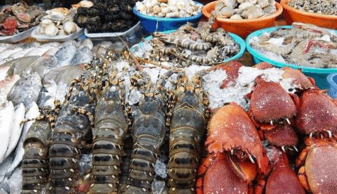
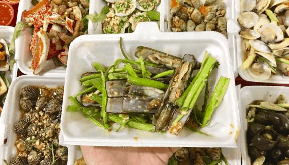
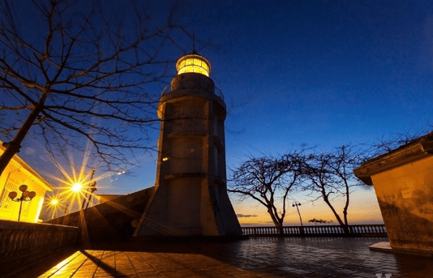
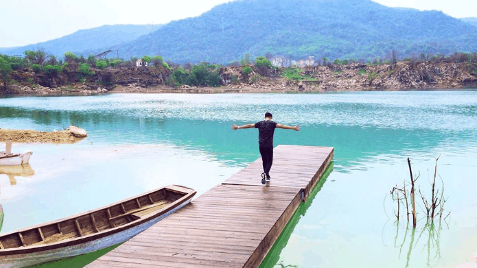

.png)
Lịch trình du lịch Vũng Tàu 2 ngày 1 đêm tự túc chỉ với 400k
Nhóm đi thích hợp nhất là nhóm 4 hoặc 6 người, xuất phát từ Sài Gòn lúc 8h sáng. Bạn đi theo đường phà Cát Lái. Chú ý là ở đoạn này công an bắn tốc độ ghê lắm. Vì vậy nhớ tuân thủ đúng luật giao thông, đừng có lấn tuyến hay chạy quá tốc độ đấy.
Đi đến ngã 3 Bà Rịa – Vũng Tàu, bạn tranh thủ ghé quán bánh canh Xuân Thủy ăn sáng nhé. Bánh canh ở đây siêu ngon luôn. Chỉ 40k cho 1 tô bự chảng với chất lượng tuyệt vời. Nếu ai dạ dày con kiến thì gọi tô nhỏ 30k nhé. Ăn uống no nên thì lên đường đi tiếp. Vì là du lịch hưởng thụ nên bạn cứ từ từ mà đi nhé, không việc gì phải vội cả. Vừa đi vừa ngắm đường cũng hay, đến nơi là khoảng 11h.
Khi du lịch Vũng Tàu 2 ngày 1 đêm tự túc thì bạn phải thuê phòng rồi. Nếu bạn đặt sẵn phòng khách sạn trước rồi thì chỉ việc nhận phòng thôi. Nếu chưa, bạn có thể đến đường Hoàng Hoa Thám để thuê nhé. Khu này cho thuê phòng không quá đắt mà cũng tiện để đi lại nữa. Theo kinh nghiệm thì bạn nhớ tham khảo giá kỹ và deal giá cho khéo nhé. Không deal là chắc chắn bị hớ luôn. Nếu đi nhóm 6 người thì giá phòng là tầm 400k/đêm/6 người.
Nhận phòng xong thì nằm nghỉ ngơi để lấy sức quẩy. Khoảng 12h30 kéo nhau đi ăn trưa. Gợi ý cho bạn là món lẩu cá đuối đặc sản Vũng Tàu. Các bạn có thể đến quán lẩu cá đuối ở đường Trương Công Định nhé. Khu này luôn đông khách nên chất lượng đã được kiểm chứng.
Nếu bạn ngại đông thì có thể đến quán Lẩu cá đuối Trận ở 42 Nguyễn Trường Tộ, P.3. Quán này không đông khách như mấy quán ở Trương Công Định nhưng cũng rất ngon nhé. Nồi lẩu lớn 200k, gọi nước, rau, mì thêm. Món ăn thì bao ngon luôn, nước đậm vị mà không gian lại rộng ngồi thoải mái luôn. Bạn cũng có thể gọi thêm mấy món như gỏi xoài khô mực, ếch xào sả ớt nhé, khoảng 80k/đĩa cũng ngon lắm.
Nạp năng lượng xong xuôi lại về khách sạn nghỉ chút rồi 3h chiều lên Núi Lớn chơi. Trên đường đi bạn có thể ghé quán nhỏ ở lưng chừng núi để ăn hột gà lòng đào và uống nước mía lau. Hột gà ở đây nhỏ xíu, được gọi là hột gà so. Đó là gà nuôi để lấy trứng nên ăn yên tâm nhé. Vị thì cũng hơi bị ngon đấy. Nước mía lau cũng ngon lắm, uống giống với nước sâm ý. Hột gà là 6k/quả, nước mía 5k/ly.
Ở Núi Lớn có Bạch Dinh, chụp chẹt sống ảo ở đây cứ gọi là quá đã luôn nhé. Khung hình toàn màu trắng mà lại rất cổ điển nữa. Ngoài ra bạn cũng có thể ghé chùa Thích Ca Phật Đài nữa.
Đến chiều, cả đám kéo nhau ra biển chơi. Đi làm đi học cả tuần mà được nhìn thấy biển thì cứ gọi là không còn gì bằng luôn. Nhớ chơi cho đã đấy nhé!
Tắm biển đã đời về khách sạn tắm lại và kéo nhau đi café. Bạn có thể đến quán MILLA Nakedsoul ở 30 Hạ Long nhé. Ở đây trang trí đẹp lắm nên chụp hình với ngắm cảnh cứ gọi là siêu thích luôn đấy. View biển bao đẹp.
Xong lại đến tiết mục ăn tối. Vũng Tàu nổi tiếng là thành phố biển nên ăn hải sản là thích nhất. Các bạn có thể ra chợ đêm hải sản Vũng Tàu ở sau khách sạn Imperial nhé. Cứ phải gọi là cả thiên đường hải sản luôn. Đồ ăn ở đây ngon mà lại rẻ nữa. Nổi tiếng có quán Cô Thy ở cuối chợ nhé.
 Ăn no nên, bạn chạy dọc đường điển để hóng mát. Tiện thể đi uống rau má đậu ở khu Đồ Chiểu nhé. Ở đây có 2 quán nổi tiếng là Lập Thành và Bà Già.
Ăn chán chê lại chạy lên ngọn Hải Đăng Vũng Tàu ngắm biển. Về đêm view biển ở đây lung linh lắm luôn nhé. Nhược điểm là lên hình không được đẹp nhưng nhìn bằng mắt thường thì rất thơ mộng. Xong xuôi về khách sạn nghỉ ngơi, kết thúc ngày đầu tiên trong chuyến du lịch Vũng Tàu 2 ngày 1 đêm tự túc.
Ở Vũng Tàu ngắm bình minh đẹp lắm. Vì thế bạn dậy sớm sớm tý nhé.
Ngắm biển xong kéo nhau đi ăn bánh khọt. Ở Vũng Tàu có nhiều quán bán bánh khọt ngon lắm nhé. Bạn có thể đến quán bánh khọt Miền Đông ở số 59 Bà Triệu, phường 4. Bánh ở đây ngon lắm, chỉ 25k/suất mà không phải chen lấn, ngồi ăn thoải mái. Còn nếu không bạn có thể đến quán Gốc Vú Sữa ở 14 Nguyễn Trường Tộ hoặc Cô Hai ở 17 Hoàng Hoa Thám nhé.
Xong xuôi ra ngắm biển lần 2 rồi về khách sạn trả phòng, dọn hành lý. Tiếp đến, bạn nhớ ghé Đồi Con Heo. Ở đây phong cảnh thích cực. Cả đám chụp ảnh tự sướng siêu chất luôn. Khung cảnh hoang sơ lại càng khiến ảnh của bạn thêm chất hơn nữa.
Nếu còn thời gian, bạn có thể đến con đường đi bộ dưới biển siêu độc. Nhưng nhược điểm là cũng hên xui. Nếu bạn đi vào ngày nước rút thì có thể đi bộ qua được. Còn ngày khách bạn sẽ phải thuê tàu ra đảo. Giá là 500k/ chuyến. Trên đường đi về, bạn ghé Hồ Đá Xanh chụp ảnh nhé. Ở đây nhìn cũng bình thường thôi nhưng lên hình thì ảo lắm đó. Giá vé vào là khoảng 90k cho 2 người.
Vậy là kết thúc chuyến du lịch Vũng Tàu 2 ngày 1 đêm tự túc cực đã. Tính tổng thiệt hại rơi vào khoảng 400k/người thôi. Cuối tuần này lập kèo kéo nhau đi ngay thôi nào!